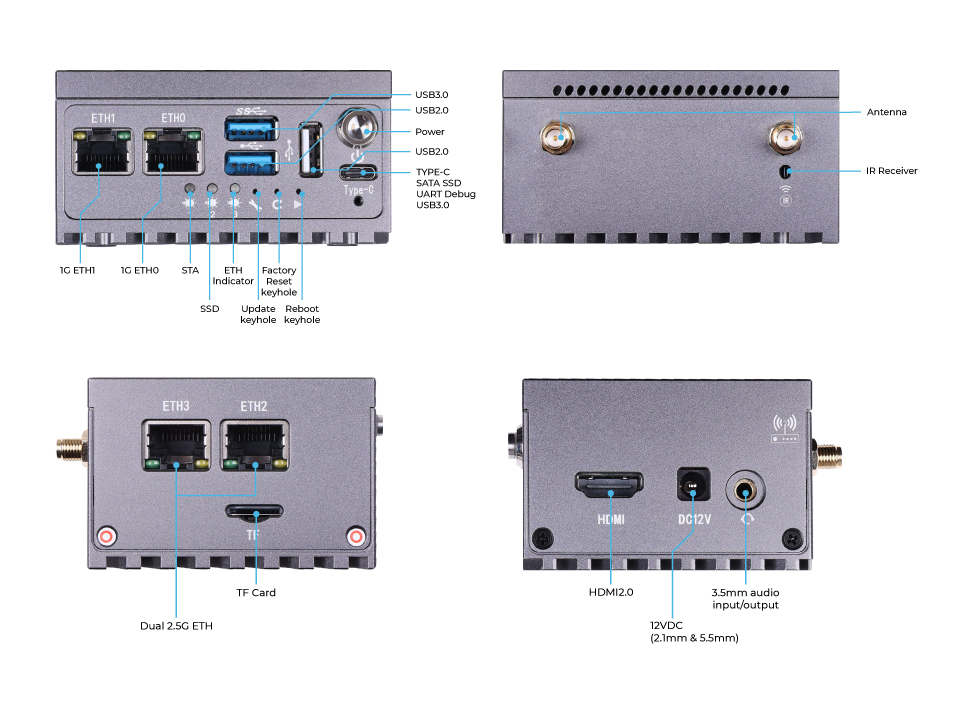
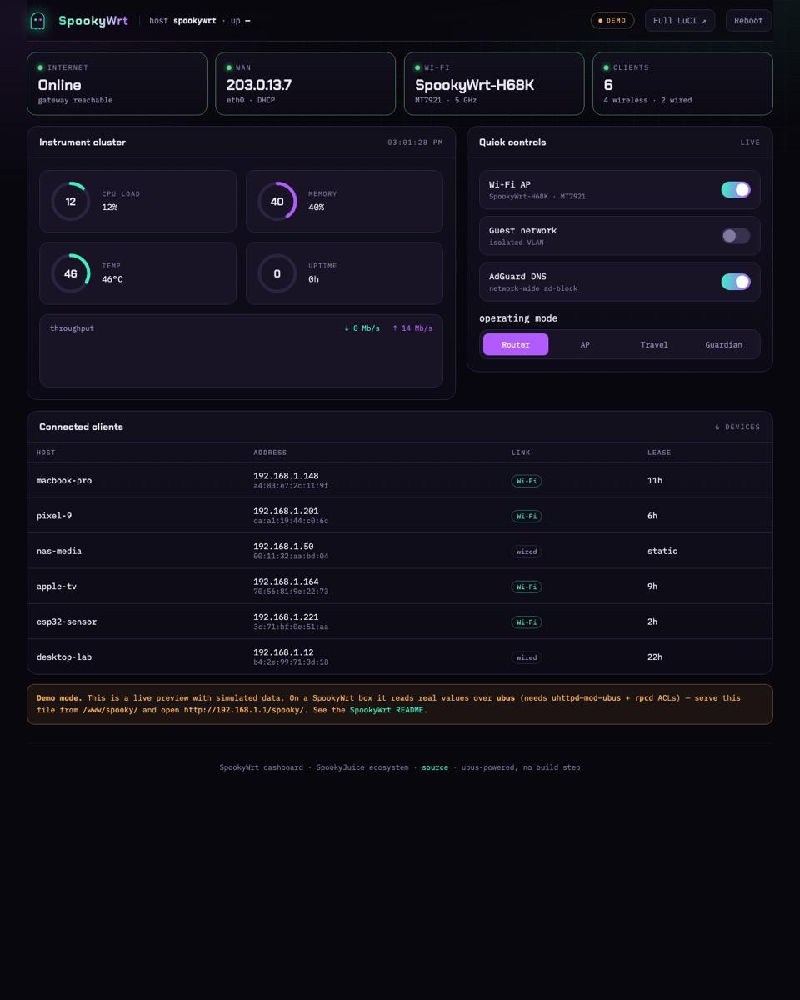
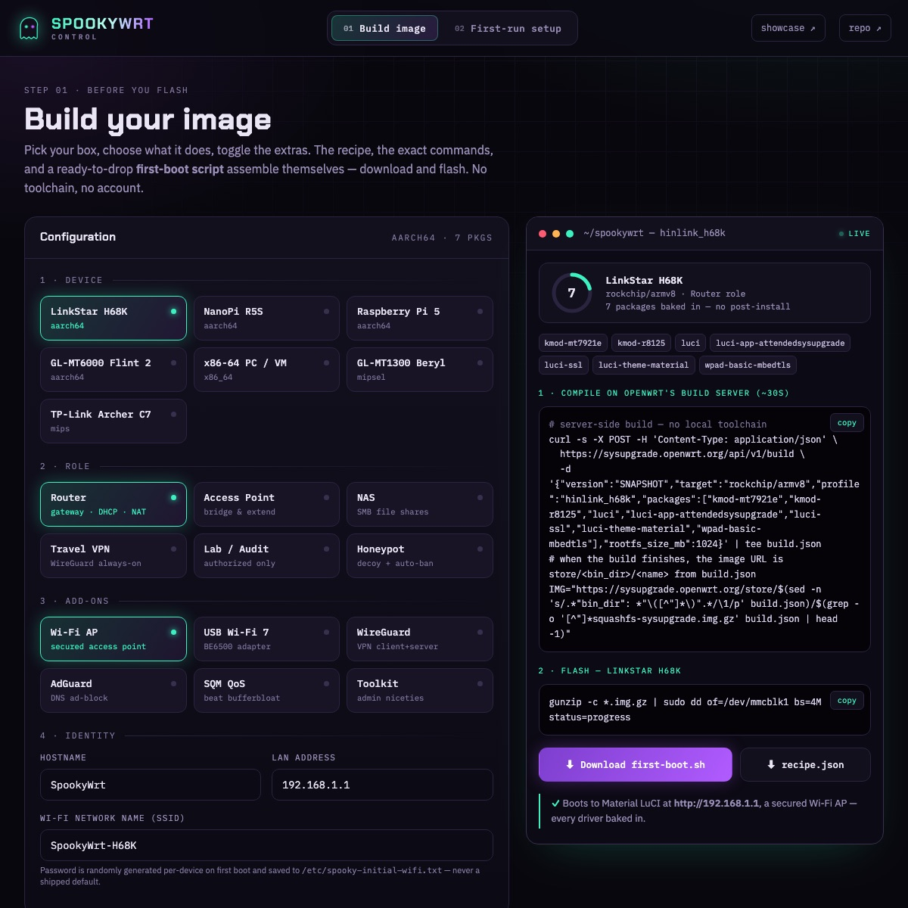

From E-Waste
to SpookyWrt
We bought a $99 Chinese mini-router that shipped broken — dead Wi-Fi, no security updates, and an unauthenticated root shell exposed on the LAN. We didn't trust it, so we tore it down to the silicon and rebuilt the whole software stack. It became SpookyWrt. Here's the autopsy, the root-cause analyses, and how two AI agents built it in ~22 hours.
We bought a cheap $99 router that showed up basically broken and unsafe — the Wi-Fi didn't work and anyone on the network could take it over. So we rebuilt its software from scratch into something fast, safe, and ours: SpookyWrt. Here's the story — two AIs did it in about a day.
📖 Reading as an engineer — flip the switch up top for the plain-languagefull technical version.
A router that fought back
The Seeed LinkStar H68K is a fanless Rockchip RK3568 mini-router: quad-core Cortex-A55, 2× 2.5 GbE + 2× 1 GbE, an optional Wi-Fi 6 radio, ~32 GB eMMC — a genuinely capable little box for $99. It ships with a vendor Ubuntu 20.04 / Android 11 image.
And that image is where it all goes wrong. The hardware is fine. The software it shipped with is the junk. Here's what we found on a fresh unit:
- adbd on 0.0.0.0:5555Android Debug Bridge listening, unauthenticated, on the LAN — a root shell to anyone on the network. On a router.
- Wi-Fi simply doesn't workThe MediaTek MT7921 radio has no driver on the vendor's 2019-era 4.19 kernel. There is no
wlaninterface. At all. - The 2.5 GbE ports are flakySame story — the RTL8125B driver on the vendor kernel doesn't reliably bring them up.
- cleartext FTP · no firewall · shared SSH host keysvsftpd on :21, iptables wide open, and SSH host keys baked into the image — every unit worldwide shares the same keys (trivial MITM).
- Default passwords, no security updates
root/root,linkstar/linkstar, on an OS that stopped getting patches. This is the "don't trust hardware from China" story in one image. - No RTC → the clock is wrong on every bootNo battery-backed clock, so it boots to a 2022 date and
aptrefuses every repo ("Release file is not valid yet"). TLS breaks. Nothing updates.
The verdict: a fast, cheap, 4-port router with a modern SoC — running an abandoned, insecure OS on a kernel too old to drive its own radios. Half-asleep and wide open. So we replaced all of it.
Three evolutions
Root-cause analyses
What was broken — and how we fixed it
This is the engineering meat — five non-obvious problems, each diagnosed to the actual cause, not the symptom.
- Wi-Fi didn't workThe router's brain (its software "kernel") was too old to know how to use its own Wi-Fi chip. We gave it a modern brain — Wi-Fi came to life.
- It wouldn't accept a fresh installThe factory image was packaged in an odd format that a normal copy can't boot. We figured out the format and wrote a tool that flashes it correctly.
- Faster (6 GHz) Wi-Fi stayed darkTwo things: a missing driver file, and a regional radio rule that blocks it. We added the file and set the right region — 6 GHz works.
- VPN wouldn't connectOne line of settings was in the wrong place, so it silently failed. We fixed the format and made it a one-command setup.
- It looked finished but wasn't safeAutomated checks all passed — yet a security review found serious holes hiding underneath. We fixed every one before shipping.
mt7921e) landed in Linux kernel 5.12. The vendor ships 4.19. Userland upgrades never touch the kernel — it lives in boot.img, not apt.Every downstream "Wi-Fi doesn't work" report traces to this one fact. It's why upgrading Ubuntu felt productive but changed nothing: we were repainting a house with a broken foundation.
.img to an SD with dd → black screen, no boot.LDR download-mode format. Sector 64 needs an RKNS rksd loader — write the wrong one and the bootROM stays dark.RKNS, write the partition layout by hand.This is the single hardest thing in the project and the reason no one else had a clean no-maskrom SD path. It's now three scripts.
mt7925u firmware blob wasn't installed — driver present, radio dead ("MCU is not ready"). (2) The US regulatory DB marks all 6 GHz channels no-IR (no-initiate-radiation), so the kernel refuses to run a 6 GHz AP.kmod-mt7925-firmware package, and set the regdomain to CA (which permits 6 GHz LPI indoor APs on the same channels).Lesson baked into the build: a USB Wi-Fi driver is useless without its matching *-firmware package — a clean build and a dead radio look identical until you flash real hardware.
config wireguard_<iface> section, never an inline option on the interface. A stray peer option makes netifd silently refuse to create the device.=, so splitting on = naively truncated them.Now a one-command spooky vpn importer emits the correct structure so no one reproduces the trap.
$PATH), a static Wi-Fi password shipped in every image, an unauthenticated reboot path.$PATH behind a fail-closed gate, per-device random keys, and — as important — rewrite the docs that over-claimed a security guarantee we couldn't deliver.The most valuable output of the audit wasn't a code fix. It was catching a firmware that looked done sitting on top of a root shell-injection vuln.
Two AI agents built this
The entire thing — the RKFW reverse-engineering, the 25 docs, the four web UIs, the security remediation, the on-device tooling — was built by two Claude agents working in parallel, coordinating like a small engineering team.
◈ The terminal agent (repo owner)
Owned the git repo, the build system, docs, web UIs, and the on-device control shell. Committed directly; gated every push on shellcheck + markdownlint + link + Python checks.
◈ The desktop agent (live device)
Owned the physical box — flashing, the live upgrade, the radio-stack debugging, VPN bring-up. Staged findings to a shared directory for the repo agent to ingest.
How they stayed out of each other's way
One rule made parallel work collision-free: partition by file, coordinate at the seam.
A shared COORDINATION.md + staging directory was the message bus. The device agent never
touched the repo; the repo agent never touched the box. When one edited the other's file, it left a
note. Bugs hid at the boundaries — and got caught there (the device agent flashed an image the repo
agent had marked "done" and found it wouldn't boot).
They spawned sub-agents, too
For hard problems, each agent fanned out specialists: a 3-agent adversarial audit (security / correctness / UX, each with a different hostile lens), research agents to source the wireless chipset matrix, and a verification swarm that build-tested the Wi-Fi-audit package manifest against the live OpenWrt build server before a single package was committed.
Why diverse agents beat one: the security auditor assumes the user is malicious; the code reviewer assumes the author erred; the UX auditor assumes the user is confused. A single reviewer averages those lenses and misses the sharp cases each catches. The audit found the cosmetic consent gate, the ASU-rejecting build command, and the shipped weak password — three different failure modes, three different reviewers.
What ~22 hours produced
Tokens consumed: [ FILL FROM DASHBOARD ] · Model: Claude (Opus/Sonnet) · Every push gated on shellcheck, markdownlint, link-check, and Python compile — no "trust me," evidence before assertions.
The deliverable is a complete firmware program, not a proof of concept: a no-maskrom flashing toolchain, four build variants (flagship / Wi-Fi-audit / VPN / AI), an on-device control shell, a ubus-powered web dashboard, a branded LuCI theme, a router-native LLM agent, and 25 docs — every hard-won gotcha turned into a guardrail so the next person doesn't rediscover it at 2 a.m.
A router with a face
Not a config file and a prayer — a real control surface. A ubus-powered dashboard, a build-your-image configurator, an on-device control shell, and a branded LuCI theme. All the hardware, finally usable.



Roadmap
SpookyWrt already runs great on the H68K. Next up: making it run on more popular little computers, and offering ready-made "editions" for different kinds of users.
The toolkit is OpenWrt-target-agnostic by design — the flashing pipeline and the whole SpookyWrt userland port to any board OpenWrt supports. Priorities:
LinkStar H68K
The flagship — kernel 6.x, Wi-Fi + 2.5 GbE alive, 4 build variants, fully hardened.
Editions
One shared core, several flavors — a friendly appliance edition, a prosumer flagship, a separate authorized-audit build, and a builder/dev edition.
Raspberry Pi 5
The most popular SBC on earth (BCM2712, PCIe/NVMe, HDMI) — SpookyWrt as a first-class Pi router/AP.
NanoPi (pocket boards)
The tiny NanoPi R-class boards — SpookyWrt in the smallest, cheapest form factor for travel routers & sensors.
Wi-Fi client profiling
WLAN-Pi-class analysis — see exactly what every device negotiates. Lands in the pro + audit editions.
Pre-baked images + mirror
Download-and-flash release images, mirrored to the Internet Archive so they never rot.
Build log
This teardown is a living document — updated as we build. Newest first.
build.py --profile: Casper (Basic appliance), Poltergeist (Pro flagship, the default), Reaper (a separate consent-gated audit image), and Séance (Dev). En route we caught two live bugs stacked on each other: the on-device overlay had blown past the build server's 40 KB first-boot cap, and a stray exit 0 was silently skipping half the install. The fix is the fun part — a gzip+base64 self-extracting overlay (56 KB → 28 KB) that places every file first, then runs each first-boot step as its own isolated process. Still offline, still no local toolchain.Four flavors of the same box — a simple one, a powerful one, a hacker one, and a builder one — all built from one shared recipe. You pick the flavor; it builds itself, no tools to install.spooky, an on-device operatorspooky-vpnspooky-agentWe turned e-waste into a platform.
It's all open
MIT-licensed, CI-green, and live. Flash your own H68K — or any OpenWrt box — and never buy a router's software story on faith again.